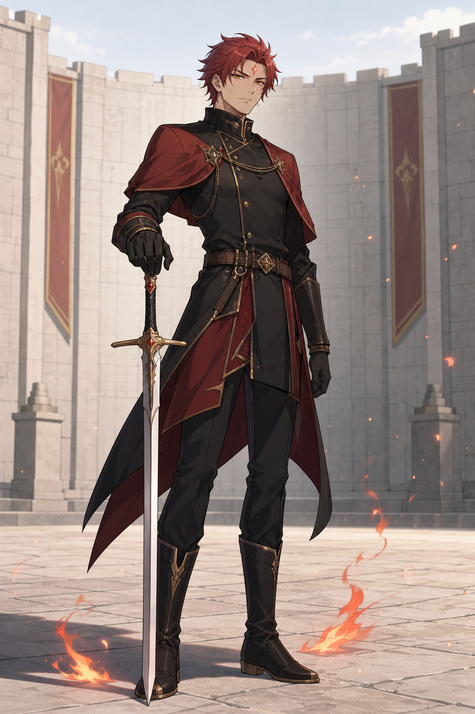

NEW DESIGN ROUND · 50 CANDIDATES
다섯 인물,
각 열 가지 얼굴.
아래 이미지는 아직 정본이 아닙니다. 번호를 비교한 뒤 “2대 원수 3번, 3대 원수 7번…”처럼 선택해 주세요. 이미지를 누르면 크게 볼 수 있습니다.
5 인물군10 후보씩50 전체 이미지

CANON STATUS
능력은 확정,
외형은 선택 중.
2대 원수는 불 속성·한 자루의 칼·세계 최상위 검술, 3대 원수는 밀기와 당기기의 염동력, 육군 1번대 중장은 한 자루의 대검을 작은 칼날로 분할, 첫째 형은 적응 진화 실험체, 해군 대장은 액체와 고체를 오가는 강철로 확정했습니다.